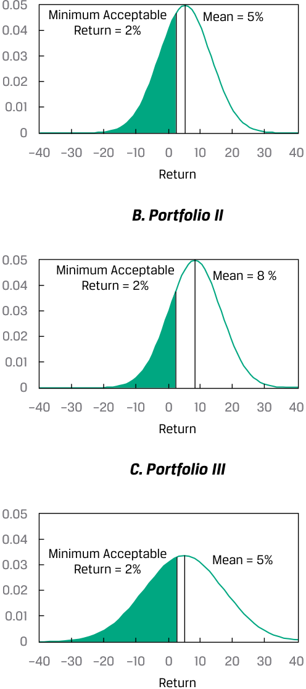
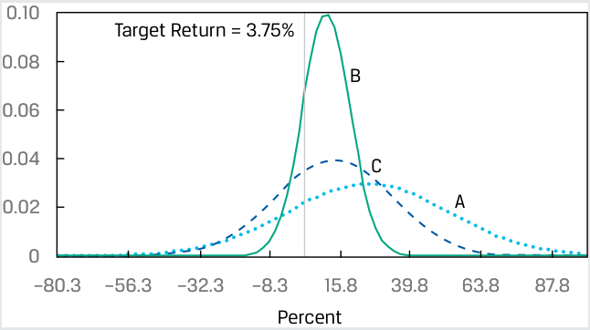
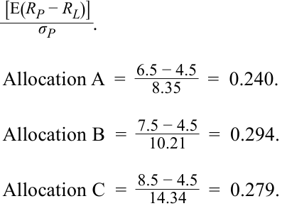

Learning Module 5 Portfolio Mathematics - Part 2: Portfolio Risk Measures: Applications of the Normal Distribution
Volume 1: Quantitative Methods
Learning Module 5 Portfolio Mathematics
Part 2/2: Portfolio Risk Measures: Applications of the Normal Distribution (PDF Pages 173–182)
Tập 1: Phương pháp Định lượng (Quantitative Methods)
Học phần 5: Toán học Danh mục đầu tư (Portfolio Mathematics)
Phần 2/2: Các Thước đo Rủi ro Danh mục đầu tư: Ứng dụng của Phân phối Chuẩn (Portfolio Risk Measures: Applications of the Normal Distribution) (Trang PDF 173–182)
PORTFOLIO RISK MEASURES: APPLICATIONS OF THE NORMAL DISTRIBUTION
CÁC THƯỚC ĐO RỦI RO DANH MỤC ĐẦU TƯ: ỨNG DỤNG CỦA PHÂN PHỐI CHUẨN (PORTFOLIO RISK MEASURES: APPLICATIONS OF THE NORMAL DISTRIBUTION)
4
4
define shortfall risk, calculate the safety-first ratio, and identify an optimal portfolio using Roy’s safety-first criterion
định nghĩa rủi ro thiếu hụt (shortfall risk), tính toán tỷ số an toàn trên hết (safety-first ratio), và xác định danh mục đầu tư tối ưu bằng cách sử dụng tiêu chuẩn an toàn trên hết của Roy (Roy’s safety-first criterion)
Modern portfolio theory (MPT) often involves valuing investment opportunities using mean return and variance of return measures. In economic theory, mean–variance analysis holds exactly when investors are risk averse; when they choose investments to maximize expected utility or satisfaction; and when either (assumption 1) returns are normally distributed or (assumption 2) investors have quadratic utility functions (a concept used in economics for a mathematical representation of risk and return trade-offs). Mean–variance analysis, however, can still be useful—that is, it can hold approximately—when either assumption 1 or 2 is violated. Because practitioners prefer to work with observables, such as returns, the proposition that returns are at least approximately normally distributed has played a key role in much of MPT.
Lý thuyết danh mục đầu tư hiện đại (MPT) thường liên quan đến việc đánh giá các cơ hội đầu tư bằng cách sử dụng các thước đo tỷ suất sinh lợi trung bình và phương sai của tỷ suất sinh lợi. Trong lý thuyết kinh tế, phân tích trung bình–phương sai (mean–variance analysis) hoàn toàn chính xác khi các nhà đầu tư ngại rủi ro (risk averse); khi họ lựa chọn các khoản đầu tư nhằm tối đa hóa hữu dụng kỳ vọng (expected utility) hay sự thỏa mãn; và khi hoặc (giả định 1) tỷ suất sinh lợi có phân phối chuẩn hoặc (giả định 2) các nhà đầu tư có hàm hữu dụng bậc hai (quadratic utility functions – một khái niệm được sử dụng trong kinh tế học để biểu diễn toán học sự đánh đổi giữa rủi ro và tỷ suất sinh lợi). Tuy nhiên, phân tích trung bình–phương sai vẫn có thể hữu ích—nghĩa là nó có thể đúng một cách xấp xỉ—khi giả định 1 hoặc giả định 2 bị vi phạm. Bởi vì những người hành nghề thực tiễn thích làm việc với các đại lượng có thể quan sát được, chẳng hạn như tỷ suất sinh lợi, nên mệnh đề cho rằng tỷ suất sinh lợi ít nhất tuân theo phân phối chuẩn một cách xấp xỉ đã đóng một vai trò then chốt trong phần lớn lý thuyết MPT.
To illustrate this concept, assume an investor is saving for retirement. Although her goal is to earn the highest real return possible, she believes that the portfolio should at least achieve real capital preservation over the long term. Assuming a long-term expected inflation rate of 2 percent, the minimum acceptable return would be 2 percent. Exhibit 10 compares three investment alternatives in terms of their expected returns and standard deviation of returns. The probability of falling below 2 percent is calculated on basis of the assumption of normally distributed returns. In Exhibit 10, we see that Portfolio II, which combines the highest expected return and the lowest volatility, has the lowest probability of earning less than 2 percent (or equivalently, the highest probability of earning at least 2 percent). This also can be seen in Panel B, which shows that Portfolio II has the smallest shaded area to the left of 2 percent (the probability of earning less than the minimum acceptable return).
Để minh họa khái niệm này, giả sử một nhà đầu tư đang tiết kiệm cho việc nghỉ hưu. Mặc dù mục tiêu của bà là kiếm được tỷ suất sinh lợi thực cao nhất có thể, bà tin rằng danh mục đầu tư ít nhất phải đạt được mục tiêu bảo toàn vốn thực (real capital preservation) trong dài hạn. Giả sử tỷ lệ lạm phát kỳ vọng dài hạn là 2 phần trăm, mức tỷ suất sinh lợi tối thiểu có thể chấp nhận được (minimum acceptable return) sẽ là 2 phần trăm. Bảng minh họa 10 so sánh ba phương án đầu tư thay thế xét về tỷ suất sinh lợi kỳ vọng và độ lệch chuẩn của tỷ suất sinh lợi của chúng. Xác suất rơi xuống dưới mức 2 phần trăm được tính dựa trên giả định tỷ suất sinh lợi có phân phối chuẩn. Trong Bảng minh họa 10, chúng ta thấy rằng Danh mục II, kết hợp tỷ suất sinh lợi kỳ vọng cao nhất và độ biến động (volatility) thấp nhất, có xác suất kiếm được dưới 2 phần trăm là thấp nhất (hoặc tương đương, có xác suất kiếm được ít nhất 2 phần trăm là cao nhất). Điều này cũng có thể được nhìn thấy trong Bảng B, cho thấy Danh mục II có diện tích tô đậm nhỏ nhất ở phía bên trái mức 2 phần trăm (xác suất kiếm được thấp hơn mức tỷ suất sinh lợi tối thiểu có thể chấp nhận được).
Exhibit 10: Probability of Earning a Minimum Acceptable Return
Bảng minh họa 10: Xác suất Kiếm được Tỷ suất sinh lợi Tối thiểu Có thể Chấp nhận được (Probability of Earning a Minimum Acceptable Return)
Panel A: Alternative Portfolio Characteristics
Bảng A: Đặc điểm của các Danh mục Thay thế (Alternative Portfolio Characteristics)
| Portfolio | I | II | II |
|---|---|---|---|
| Expected return | 5% | 8% | 5% |
| Standard deviation of return | 8% | 8% | 12% |
| Probability of earning < 2% [P(x< 2)] | 37.7% | 24.6% | 41.7% |
| Probability of earning ≥ 2% [P(x≥ 2)] | 62.3% | 75.4% | 58.3% |
| Danh mục đầu tư (Portfolio) | I | II | III |
|---|---|---|---|
| Tỷ suất sinh lợi kỳ vọng (Expected return) | 5% | 8% | 5% |
| Độ lệch chuẩn của tỷ suất sinh lợi (Standard deviation of return) | 8% | 8% | 12% |
| Xác suất kiếm được $< 2\%$ [$P(x < 2)$] | 37.7% | 24.6% | 41.7% |
| Xác suất kiếm được $\ge 2\%$ [$P(x \ge 2)$] | 62.3% | 75.4% | 58.3% |
Panel B: Likelihoods of Attainting Minimal Acceptable Return
Bảng B: Khả năng Đạt được Tỷ suất sinh lợi Tối thiểu Có thể Chấp nhận được (Likelihoods of Attaining Minimal Acceptable Return)
A. Portfolio I
_A. Danh mục I (Portfolio I)_

Chú thích hình ảnh: - A. Portfolio I: Tỷ suất sinh lợi tối thiểu chấp nhận được (Minimum Acceptable Return) = 2%, Trung bình (Mean) = 5%. - B. Portfolio II: Tỷ suất sinh lợi tối thiểu chấp nhận được = 2%, Trung bình = 8%. - C. Portfolio III: Tỷ suất sinh lợi tối thiểu chấp nhận được = 2%, Trung bình = 5% (đường cong rộng hơn do độ lệch chuẩn 12%).
Mean–variance analysis generally considers risk symmetrically in the sense that standard deviation captures variability both above and below the mean. An alternative approach evaluates only downside risk. We discuss one such approach, safety-first rules, because they provide an excellent illustration of the application of normal distribution theory to practical investment problems. Safety-first rules focus on shortfall risk , the risk that portfolio value (or portfolio return) will fall below some minimum acceptable level over some time horizon. The risk that the assets in a defined benefit plan will fall below plan liabilities is an example of a shortfall risk.
Phân tích trung bình–phương sai nhìn chung xem xét rủi ro một cách đối xứng theo nghĩa là độ lệch chuẩn nắm bắt sự biến thiên ở cả phía trên và phía dưới giá trị trung bình. Một cách tiếp cận thay thế chỉ đánh giá rủi ro phía dưới (downside risk). Chúng ta thảo luận về một cách tiếp cận như vậy, đó là các quy tắc an toàn trên hết (safety-first rules), bởi vì chúng cung cấp một minh họa xuất sắc về việc áp dụng lý thuyết phân phối chuẩn vào các bài toán đầu tư thực tế. Các quy tắc an toàn trên hết (Safety-first rules) tập trung vào rủi ro thiếu hụt (shortfall risk), tức rủi ro giá trị danh mục đầu tư (hoặc tỷ suất sinh lợi danh mục đầu tư) sẽ rơi xuống dưới một mức tối thiểu có thể chấp nhận được nào đó trong một khoảng thời gian nhất định. Rủi ro tài sản trong một quỹ hưu trí có mức hưởng xác định (defined benefit plan) giảm xuống thấp hơn các nghĩa vụ nợ của quỹ là một ví dụ về rủi ro thiếu hụt.
Suppose an investor views any return below a level of RL as unacceptable. Roy’s safety-first criterion (Roy 1952) states that the optimal portfolio minimizes the probability that portfolio return, RP, will fall below the threshold level, RL. That is, the investor’s objective is to choose a portfolio that minimizes P (RP < RL). When portfolio returns are normally distributed, we can calculate P (RP < RL) using the number of standard deviations that RL lies below the expected portfolio return, E(RP). The
Giả sử một nhà đầu tư coi bất kỳ mức tỷ suất sinh lợi nào thấp hơn mức $R_L$ là không thể chấp nhận được. Tiêu chuẩn an toàn trên hết của Roy (Roy’s safety-first criterion) (Roy 1952) phát biểu rằng danh mục đầu tư tối ưu sẽ tối thiểu hóa xác suất để tỷ suất sinh lợi của danh mục, $R_P$, rơi xuống dưới mức ngưỡng (threshold level), $R_L$. Nghĩa là, mục tiêu của nhà đầu tư là chọn một danh mục tối thiểu hóa $P(R_P < R_L)$. Khi tỷ suất sinh lợi của danh mục có phân phối chuẩn, chúng ta có thể tính $P(R_P < R_L)$ bằng cách sử dụng số lần độ lệch chuẩn mà mức $R_L$ nằm thấp hơn tỷ suất sinh lợi kỳ vọng của danh mục, $E(R_P)$.
portfolio for which E(RP) − RL is largest relative to standard deviation minimizes P (RP < RL). Therefore, if returns are normally distributed, the safety-first optimal portfolio maximizes the safety-first ratio (SFRatio), as follows:
Danh mục nào có $E(R_P) - R_L$ lớn nhất tương ứng với độ lệch chuẩn sẽ tối thiểu hóa $P(R_P < R_L)$. Do đó, nếu tỷ suất sinh lợi có phân phối chuẩn, danh mục tối ưu theo tiêu chuẩn an toàn trên hết sẽ tối đa hóa tỷ số an toàn trên hết (safety-first ratio – SFRatio), như sau:
SFRatio = [E(RP) − RL]/σP. ~~(9)~~
The quantity E(RP) − RL is the distance from the mean return to the shortfall level. Dividing this distance by σP gives the distance in units of standard deviation. When choosing among portfolios using Roy’s criterion (assuming normality), follow these two steps:
Đại lượng $E(R_P) - R_L$ là khoảng cách từ tỷ suất sinh lợi trung bình đến mức thiếu hụt (shortfall level). Chia khoảng cách này cho $\sigma_P$ sẽ cho biết khoảng cách tính theo đơn vị độ lệch chuẩn. Khi lựa chọn giữa các danh mục đầu tư bằng tiêu chuẩn của Roy (giả định phân phối chuẩn), hãy làm theo hai bước sau:
1. Calculate each portfolio’s SFRatio.
1. Tính $\text{SFRatio}$ của từng danh mục đầu tư.
2. Choose the portfolio with the highest SFRatio.
2. Chọn danh mục đầu tư có $\text{SFRatio}$ cao nhất.
For a portfolio with a given safety-first ratio, the probability that its return will be less than RL is Normal (–SFRatio), and the safety-first optimal portfolio has the lowest such probability. For example, suppose an investor’s threshold return, RL, is 2 percent. He is presented with two portfolios. Portfolio 1 has an expected return of 12 percent, with a standard deviation of 15 percent. Portfolio 2 has an expected return of 14 percent, with a standard deviation of 16 percent. The SFRatios, using Equation 9, are 0.667 = (12 − 2)/15 and 0.75 = (14 − 2)/16 for Portfolios 1 and 2, respectively. For the superior Portfolio 2, the probability that portfolio return will be less than 2 percent is N (−0.75) = 1 − N (0.75) = 1 − 0.7734 = 0.227, or about 23 percent, assuming that portfolio returns are normally distributed.
Đối với một danh mục có tỷ số an toàn trên hết cho trước, xác suất để tỷ suất sinh lợi của nó nhỏ hơn $R_L$ là $\text{Normal}(-\text{SFRatio})$, và danh mục tối ưu theo tiêu chuẩn an toàn trên hết có xác suất đó thấp nhất. Ví dụ, giả sử mức tỷ suất sinh lợi ngưỡng của một nhà đầu tư, $R_L$, là 2 phần trăm. Ông được giới thiệu hai danh mục đầu tư. Danh mục 1 có tỷ suất sinh lợi kỳ vọng là 12 phần trăm, với độ lệch chuẩn là 15 phần trăm. Danh mục 2 có tỷ suất sinh lợi kỳ vọng là 14 phần trăm, với độ lệch chuẩn là 16 phần trăm. Các tỷ số $\text{SFRatio}$, sử dụng Phương trình 9, lần lượt là $0.667 = (12 - 2)/15$ và $0.75 = (14 - 2)/16$ đối với Danh mục 1 và 2. Đối với Danh mục 2 vượt trội hơn, xác suất để tỷ suất sinh lợi của danh mục nhỏ hơn 2 phần trăm là $N(-0.75) = 1 - N(0.75) = 1 - 0.7734 = 0.227$, hay khoảng 23 phần trăm, giả sử rằng tỷ suất sinh lợi của danh mục có phân phối chuẩn.
You may have noticed the similarity of the SFRatio to the Sharpe ratio. If we substitute the risk-free rate, RF, for the critical level RL, the SFRatio becomes the Sharpe ratio. The safety-first approach provides a new perspective on the Sharpe ratio: When we evaluate portfolios using the Sharpe ratio, the portfolio with the highest Sharpe ratio is the one that minimizes the probability that portfolio return will be less than the risk-free rate (given a normality assumption).
Bạn có thể đã nhận thấy sự tương đồng giữa $\text{SFRatio}$ và tỷ số Sharpe (Sharpe ratio). Nếu chúng ta thay lãi suất phi rủi ro, $R_F$, cho mức tới hạn $R_L$, thì $\text{SFRatio}$ sẽ trở thành tỷ số Sharpe. Cách tiếp cận an toàn trên hết mang lại một góc nhìn mới về tỷ số Sharpe: Khi chúng ta đánh giá các danh mục đầu tư bằng tỷ số Sharpe, danh mục có tỷ số Sharpe cao nhất chính là danh mục tối thiểu hóa xác suất tỷ suất sinh lợi của danh mục sẽ thấp hơn lãi suất phi rủi ro (với giả định phân phối chuẩn).
EXAMPLE 3
VÍ DỤ 3
The Safety-First Optimal Portfolio for a Client
Danh mục đầu tư Tối ưu theo Tiêu chuẩn An toàn trên hết cho một Khách hàng (The Safety-First Optimal Portfolio for a Client)
You are researching asset allocations for a client in Canada with a CAD800,000 portfolio. Although her investment objective is long-term growth, at the end of a year, she may want to liquidate CAD30,000 of the portfolio to fund educational expenses. If that need arises, she would like to be able to take out the CAD30,000 without invading the initial capital of CAD800,000. Exhibit 11 shows three alternative allocations.
Bạn đang nghiên cứu các phương án phân bổ tài sản cho một khách hàng tại Canada có danh mục đầu tư trị giá CAD 800,000. Mặc dù mục tiêu đầu tư của bà là tăng trưởng dài hạn, nhưng vào cuối một năm, bà có thể muốn thanh lý CAD 30,000 từ danh mục để tài trợ cho các chi phí giáo dục. Nếu nhu cầu đó phát sinh, bà muốn có thể rút ra CAD 30,000 mà không xâm phạm vào số vốn ban đầu là CAD 800,000. Bảng minh họa 11 cho thấy ba phương án phân bổ thay thế.
Exhibit 11: Mean and Standard Deviation for Three Allocations (in Percent)
Bảng minh họa 11: Giá trị Trung bình và Độ lệch chuẩn của Ba Phương án Phân bổ (tính bằng Phần trăm) (Mean and Standard Deviation for Three Allocations (in Percent))
| Allocation | A | B | C |
|---|---|---|---|
| Expected annual return | 25 | 11 | 14 |
| Standard deviation of return | 27 | 8 | 20 |
| Phương án phân bổ (Allocation) | A | B | C |
|---|---|---|---|
| Tỷ suất sinh lợi hàng năm kỳ vọng (Expected annual return) | 25 | 11 | 14 |
| Độ lệch chuẩn của tỷ suất sinh lợi (Standard deviation of return) | 27 | 8 | 20 |
Address these questions (assume normality for Questions 2 and 3):
Hãy trả lời các câu hỏi sau (giả định phân phối chuẩn cho Câu hỏi 2 và 3):
- Given the client’s desire not to invade the CAD800,000 principal, what is the shortfall level, RL? Use this shortfall level to answer question 2.
- Với mong muốn của khách hàng là không xâm phạm vào vốn gốc CAD 800,000, mức thiếu hụt, $R_L$, là bao nhiêu? Sử dụng mức thiếu hụt này để trả lời câu hỏi 2.
Solution:
Lời giải:
Because CAD30,000/CAD800,000 is 3.75 percent, for any return less than 3.75 percent the client will need to invade principal if she takes out CAD30,000. So, RL = 3.75%.
Bởi vì $\text{CAD } 30,000 / \text{CAD } 800,000$ bằng 3.75 phần trăm, nên với bất kỳ mức tỷ suất sinh lợi nào thấp hơn 3.75 phần trăm, khách hàng sẽ phải xâm phạm vào vốn gốc nếu bà rút ra CAD 30,000. Do đó, $R_L = 3.75\%$.
- According to the safety-first criterion, which of the three allocations is the best?
- Theo tiêu chuẩn an toàn trên hết, phương án nào trong ba phương án phân bổ là tốt nhất?
(Hint, to decide which of the three allocations is safety-first optimal, select the alternative with the highest ratio [E(RP) − RL]/σP.)
A. 0.787037 = (25 − 3.75)/27
(Gợi ý: để quyết định phương án phân bổ nào trong ba phương án là tối ưu theo tiêu chuẩn an toàn trên hết, hãy chọn phương án có tỷ số $[E(R_P) - R_L]/\sigma_P$ cao nhất.)
-
B. 0.90625 = (11 − 3.75)/8
-
C. 0.5125 = (14 − 3.75)/20
-
A. $0.787037 = (25 - 3.75)/27$
-
B. $0.90625 = (11 - 3.75)/8$
-
C. $0.5125 = (14 - 3.75)/20$
Solution:
Lời giải:
B is correct. Allocation B, with the largest ratio (0.90625), is the best alternative according to the safety-first criterion.
B là đáp án đúng. Phương án phân bổ B, với tỷ số lớn nhất (0.90625), là phương án tốt nhất theo tiêu chuẩn an toàn trên hết.
- What is the probability that the return on the safety-first optimal portfolio will be less than the shortfall level?
- Xác suất để tỷ suất sinh lợi của danh mục tối ưu theo tiêu chuẩn an toàn trên hết nhỏ hơn mức thiếu hụt là bao nhiêu?
Solution:
Lời giải:
To answer this question, note that P (RB < 3.75) = Normal (−0.90625). We can round 0.90625 to 0.91 for use with tables of the standard normal CDF. First, we calculate Normal (−0.91) = 1 − Normal (0.91) = 1 − 0.8186 = 0.1814, or about 18.1 percent. Using a spreadsheet function for the standard normal CDF on −0.90625 without rounding, we get 0.182402, or about 18.2 percent. The safety-first optimal portfolio has a roughly 18 percent chance of not meeting a 3.75 percent return threshold. This can be seen in the following graphic, in which Allocation B has the smallest area under the distribution curve to the left of 3.75 percent.
Để trả lời câu hỏi này, lưu ý rằng $P(R_B < 3.75) = \text{Normal}(-0.90625)$. Chúng ta có thể làm tròn 0.90625 thành 0.91 để sử dụng với bảng hàm phân phối tích lũy (CDF) chuẩn tắc. Trước tiên, chúng ta tính $\text{Normal}(-0.91) = 1 - \text{Normal}(0.91) = 1 - 0.8186 = 0.1814$, hay khoảng 18.1 phần trăm. Sử dụng hàm bảng tính cho CDF chuẩn tắc với giá trị $-0.90625$ mà không làm tròn, chúng ta thu được 0.182402, hay khoảng 18.2 phần trăm. Danh mục tối ưu theo tiêu chuẩn an toàn trên hết có khoảng 18 phần trăm khả năng không đạt được ngưỡng tỷ suất sinh lợi 3.75 phần trăm. Điều này có thể được nhìn thấy trong đồ thị sau đây, trong đó Phương án phân bổ B có diện tích nằm dưới đường cong phân phối ở phía bên trái mức 3.75 phần trăm là nhỏ nhất.

Chú thích hình ảnh: - Target Return = 3.75%: Tỷ suất sinh lợi mục tiêu = 3.75% - Ba đường cong phân phối chuẩn của phương án A, B, C với trục hoành là Percent (Phần trăm).
Several points are worth noting. First, if the inputs were slightly different, we could get a different ranking. For example, if the mean return on B were 10 percent rather than 11 percent, Allocation A would be superior to B. Second, if meeting the 3.75 percent return threshold were a necessity rather than a wish, CAD830,000 in one year could be modeled as a liability. Fixed-income strategies, such as cash flow matching, could be used to offset or immunize the CAD830,000 quasi-liability.
Có một số điểm đáng lưu ý. Thứ nhất, nếu các dữ liệu đầu vào hơi khác một chút, chúng ta có thể nhận được một thứ hạng khác. Ví dụ, nếu tỷ suất sinh lợi trung bình của B là 10 phần trăm thay vì 11 phần trăm, thì Phương án phân bổ A sẽ vượt trội hơn B. Thứ hai, nếu việc đáp ứng ngưỡng tỷ suất sinh lợi 3.75 phần trăm là một điều bắt buộc thay vì chỉ là một mong muốn, thì mức CAD 830,000 sau một năm có thể được mô hình hóa như một khoản nợ phải trả (liability). Các chiến lược thu nhập cố định, chẳng hạn như khớp dòng tiền (cash flow matching), có thể được sử dụng để bù đắp hoặc miễn nhiễm rủi ro (immunize) cho khoản chuẩn nợ (quasi-liability) trị giá CAD 830,000 này.
In many investment contexts besides Roy’s safety-first criterion, we use the normal distribution to estimate a probability. Another arena in which the normal distribution plays an important role is financial risk management. Financial institutions, such as investment banks, security dealers, and commercial banks, have formal systems to measure and control financial risk at various levels, from trading positions to the overall risk for the firm. Two mainstays in managing financial risk are value at risk (VaR) and stress testing/scenario analysis. Stress testing and scenario analysis refer to a set of techniques for estimating losses in extremely unfavorable combinations of events or scenarios. Value at risk (VaR) is a money measure of the minimum value of losses expected over a specified time period (e.g., a day, a quarter, or a year) at a given level of probability (often 0.05 or 0.01). Suppose we specify a one-day time horizon and a level of probability of 0.05, which would be called a 95 percent one-day VaR. If this VaR equaled EUR5 million for a portfolio, there would be a 0.05 probability that the portfolio would lose EUR5 million or more in a single day (assuming our assumptions were correct). One of the basic approaches to estimating VaR, the variance–covariance or analytical method, assumes that returns follow a normal distribution.
Trong nhiều bối cảnh đầu tư ngoài tiêu chuẩn an toàn trên hết của Roy, chúng ta sử dụng phân phối chuẩn để ước tính xác suất. Một lĩnh vực khác mà phân phối chuẩn đóng vai trò quan trọng là quản trị rủi ro tài chính (financial risk management). Các định chế tài chính, chẳng hạn như ngân hàng đầu tư, nhà kinh doanh chứng khoán và ngân hàng thương mại, có các hệ thống chính thức để đo lường và kiểm soát rủi ro tài chính ở nhiều cấp độ khác nhau, từ các vị thế giao dịch đến rủi ro tổng thể của toàn công ty. Hai trụ cột chính trong quản trị rủi ro tài chính là giá trị có rủi ro (value at risk – VaR) và kiểm định sức chịu đựng/phân tích kịch bản (stress testing/scenario analysis). Kiểm định sức chịu đựng (Stress testing) và phân tích kịch bản (scenario analysis) đề cập đến một tập hợp các kỹ thuật nhằm ước tính các khoản lỗ trong những sự kết hợp biến cố hoặc kịch bản cực kỳ bất lợi. Giá trị có rủi ro (Value at risk – VaR) là thước đo bằng tiền về giá trị tổn thất tối thiểu dự kiến trong một khoảng thời gian xác định (ví dụ: một ngày, một quý, hoặc một năm) tại một mức xác suất cho trước (thường là 0.05 hoặc 0.01). Giả sử chúng ta chỉ định khung thời gian một ngày và mức xác suất là 0.05, khi đó sẽ được gọi là VaR một ngày ở mức độ tin cậy 95 phần trăm (95 percent one-day VaR). Nếu mức VaR này bằng EUR 5 triệu đối với một danh mục đầu tư, thì sẽ có xác suất 0.05 là danh mục đầu tư đó sẽ lỗ từ EUR 5 triệu trở lên trong một ngày duy nhất (giả sử các giả định của chúng ta là chính xác). Một trong những cách tiếp cận cơ bản để ước tính VaR, phương pháp phương sai–hiệp phương sai hay phương pháp giải tích (variance–covariance or analytical method), giả định rằng tỷ suất sinh lợi tuân theo phân phối chuẩn.
QUESTION SET
BỘ CÂU HỎI (QUESTION SET)
A client has a portfolio of common stocks and fixed-income instruments with a current value of GBP1,350,000. She intends to liquidate GBP50,000 from the portfolio at the end of the year to purchase a partnership share in a business. Furthermore, the client would like to be able to withdraw the GBP50,000 without reducing the initial capital of GBP1,350,000. The following table shows four alternative asset allocations.
Một khách hàng có danh mục đầu tư gồm các cổ phiếu phổ thông và các công cụ thu nhập cố định với giá trị hiện tại là GBP 1,350,000. Bà dự định thanh lý GBP 50,000 từ danh mục đầu tư vào cuối năm để mua cổ phần hợp danh trong một doanh nghiệp. Hơn nữa, khách hàng muốn có thể rút ra GBP 50,000 mà không làm giảm số vốn ban đầu là GBP 1,350,000. Bảng sau đây cho thấy bốn phương án phân bổ tài sản thay thế.
Mean and Standard Deviation for Four Allocations (in Percent)
Giá trị Trung bình và Độ lệch chuẩn của Bốn Phương án Phân bổ (tính bằng Phần trăm) (Mean and Standard Deviation for Four Allocations (in Percent))
| A | B | C | D | |
|---|---|---|---|---|
| Expected annual return | 16 | 12 | 10 | 9 |
| Standard deviation of return | 24 | 17 | 12 | 11 |
| A | B | C | D | |
|---|---|---|---|---|
| Tỷ suất sinh lợi hàng năm kỳ vọng (Expected annual return) | 16 | 12 | 10 | 9 |
| Độ lệch chuẩn của tỷ suất sinh lợi (Standard deviation of return) | 24 | 17 | 12 | 11 |
- Address the following questions (assume normality for Parts B and C):
-
A. Given the client’s desire not to invade the GBP1,350,000 principal, what is the shortfall level, RL? Use this shortfall level to answer Question 2.
-
B. According to the safety-first criterion, which of the allocations is the best?
-
C. What is the probability that the return on the safety-first optimal portfolio will be less than the shortfall level, RL?
-
Solution:
-
A. Because GBP50,000/GBP1,350,000 is 3.7 percent, for any return less than 3.7 percent the client will need to invade principal if she takes out GBP50,000. So RL = 3.7 percent.
-
B. To decide which of the allocations is safety-first optimal, select the alternative with the highest ratio [E(RP) − RL]/σP:
-
Allocation A 0.5125 = (16 – 3.7)/24.
Allocation B 0.488235 = (12 – 3.7)/17.
- Hãy trả lời các câu hỏi sau (giả định phân phối chuẩn cho Phần B và C):
-
A. Với mong muốn của khách hàng là không xâm phạm vào vốn gốc GBP 1,350,000, mức thiếu hụt, $R_L$, là bao nhiêu? Sử dụng mức thiếu hụt này để trả lời Câu B.
-
B. Theo tiêu chuẩn an toàn trên hết, phương án phân bổ nào là tốt nhất?
-
C. Xác suất để tỷ suất sinh lợi của danh mục tối ưu theo tiêu chuẩn an toàn trên hết nhỏ hơn mức thiếu hụt, $R_L$, là bao nhiêu?
-
Lời giải:
-
A. Bởi vì $\text{GBP } 50,000 / \text{GBP } 1,350,000$ bằng 3.7 phần trăm, nên với bất kỳ mức tỷ suất sinh lợi nào thấp hơn 3.7 phần trăm, khách hàng sẽ phải xâm phạm vào vốn gốc nếu bà rút ra GBP 50,000. Do đó, $R_L = 3.7\%$.
-
B. Để quyết định phương án phân bổ nào là tối ưu theo tiêu chuẩn an toàn trên hết, hãy chọn phương án có tỷ số $[E(R_P) - R_L]/\sigma_P$ cao nhất:
-
Phương án A: $0.5125 = (16 - 3.7)/24$.
-
Phương án B: $0.488235 = (12 - 3.7)/17$.
Allocation C 0.525 = (10 – 3.7)/12.
Allocation D 0.481818 = (9 – 3.7)/11.
-
Allocation C, with the largest ratio (0.525), is the best alternative according to the safety-first criterion.
-
C. To answer this question, note that P (RC < 3.7) = N (0.037 – 0.10)/0.12) = Normal (−0.525). By using Excel’s NORM.S.DIST() function, we get NORM.S.DIST((0.037 – 0.10)/0.12) = 29.98%, or about 30 percent. The safety-first optimal portfolio has a roughly 30 percent chance of not meeting a 3.7 percent return threshold.
- A client holding a GBP2,000,000 portfolio wants to withdraw GBP90,000 in one year without invading the principal. According to Roy’s safety-first criterion, which of the following portfolio allocations is optimal?
-
Phương án C: $0.525 = (10 - 3.7)/12$.
-
Phương án D: $0.481818 = (9 - 3.7)/11$.
-
Phương án C, với tỷ số lớn nhất (0.525), là phương án thay thế tốt nhất theo tiêu chuẩn an toàn trên hết.
-
C. Để trả lời câu hỏi này, lưu ý rằng $P(R_C < 3.7) = N((0.037 - 0.10)/0.12) = \text{Normal}(-0.525)$. Bằng cách sử dụng hàm
NORM.S.DIST()của Excel, chúng ta thu đượcNORM.S.DIST((0.037 - 0.10)/0.12)$= 29.98\%$, hay khoảng 30 phần trăm. Danh mục tối ưu theo tiêu chuẩn an toàn trên hết có khoảng 30 phần trăm khả năng không đạt được ngưỡng tỷ suất sinh lợi 3.7 phần trăm.
- Một khách hàng nắm giữ danh mục đầu tư trị giá GBP 2,000,000 muốn rút ra GBP 90,000 sau một năm mà không xâm phạm vào vốn gốc. Theo tiêu chuẩn an toàn trên hết của Roy, phương án phân bổ danh mục đầu tư nào sau đây là tối ưu?
| Allocation A | Allocation B | Allocation C | |
|---|---|---|---|
| Expected annual return | 6.5% | 7.5% | 8.5% |
| Standard deviation of returns | 8.35% | 10.21% | 14.34% |
| Phương án A (Allocation A) | Phương án B (Allocation B) | Phương án C (Allocation C) | |
|---|---|---|---|
| Tỷ suất sinh lợi hàng năm kỳ vọng (Expected annual return) | 6.5% | 7.5% | 8.5% |
| Độ lệch chuẩn của tỷ suất sinh lợi (Standard deviation of returns) | 8.35% | 10.21% | 14.34% |
-
A. Allocation A
-
B. Allocation B
-
C. Allocation C
-
Solution:
-
A. Phương án A
-
B. Phương án B
-
C. Phương án C
-
Lời giải:
B is correct. Allocation B has the highest safety-first ratio. The threshold return level, RL, for the portfolio is GBP90,000/GBP2,000,000 = 4.5 percent; thus, any return less than RL = 4.5% will invade the portfolio principal. To compute the allocation that is safety-first optimal, select the alternative with the highest ratio:
B là đáp án đúng. Phương án B có tỷ số an toàn trên hết cao nhất. Mức tỷ suất sinh lợi ngưỡng, $R_L$, đối với danh mục đầu tư là $\text{GBP } 90,000 / \text{GBP } 2,000,000 = 4.5\%$; do đó, bất kỳ mức tỷ suất sinh lợi nào nhỏ hơn $R_L = 4.5\%$ sẽ xâm phạm vào vốn gốc của danh mục đầu tư. Để tính toán phương án phân bổ tối ưu theo tiêu chuẩn an toàn trên hết, hãy chọn phương án có tỷ số cao nhất:

~~REFERENCES~~
TÀI LIỆU THAM KHẢO (REFERENCES)
Roy, A. D. 1952. “Safety First and the Holding of Assets.” Econometrica 20 (3): 431–49. 10.2307/1907413
Roy, A. D. 1952. “Safety First and the Holding of Assets.” Econometrica 20 (3): 431–49. 10.2307/1907413
~~PRACTICE PROBLEMS~~
BÀI TẬP THỰC HÀNH (PRACTICE PROBLEMS)
1. An analyst produces the following joint probability function for a foreign index (FI) and a domestic index (DI).
1. Một chuyên viên phân tích lập hàm xác suất đồng thời (joint probability function) sau đây cho một chỉ số nước ngoài (FI) và một chỉ số trong nước (DI).
| RDI = 30% | RDI = 25% | RDI = 15% | |
|---|---|---|---|
| RFI= 25% | 0.25 | ||
| RFI= 15% | 0.50 | ||
| RFI= 10% | 0.25 |
| $R_{\text{DI}} = 30\%$ | $R_{\text{DI}} = 25\%$ | $R_{\text{DI}} = 15\%$ | |
|---|---|---|---|
| $R_{\text{FI}} = 25\%$ | 0.25 | ||
| $R_{\text{FI}} = 15\%$ | 0.50 | ||
| $R_{\text{FI}} = 10\%$ | 0.25 |
The covariance of returns on the foreign index and the returns on the domestic index is closest to:
A. 26.39.
Hiệp phương sai của tỷ suất sinh lợi trên chỉ số nước ngoài và tỷ suất sinh lợi trên chỉ số trong nước gần nhất với:
B. 26.56.
C. 28.12.
-
A. 26.39.
-
B. 26.56.
-
C. 28.12.
~~SOLUTIONS~~
LỜI GIẢI (SOLUTIONS)
- B is correct. The covariance is 26.56, calculated as follows. First, expected returns are E (RFI) = (0.25 × 25) + (0.50 × 15) + (0.25 × 10) = 6.25 + 7.50 + 2.50 = 16.25 and E (RDI) = (0.25 × 30) + (0.50 × 25) + (0.25 × 15) = 7.50 + 12.50 + 3.75 = 23.75. Covariance is Cov(RFI,RDI) = ∑ i ∑ j P ( RFI , i , RDI , j )( RFI , i − E RFI )( RDI , j − E RDI ) = 0.25[(25 – 16.25)(30 – 23.75)] + 0.50[(15 – 16.25)(25 – 23.75)] + 0.25[(10 – 16.25)(15 – 23.75)] = 13.67 + (–0.78) + 13.67 = 26.56.
- B là đáp án đúng. Hiệp phương sai là 26.56, được tính như sau. Trước tiên, tỷ suất sinh lợi kỳ vọng là $E(R_{\text{FI}}) = (0.25 \times 25) + (0.50 \times 15) + (0.25 \times 10) = 6.25 + 7.50 + 2.50 = 16.25$ và $E(R_{\text{DI}}) = (0.25 \times 30) + (0.50 \times 25) + (0.25 \times 15) = 7.50 + 12.50 + 3.75 = 23.75$. Hiệp phương sai là: